Servicios para empresas
Evaluamos, certificamos y seleccionamos a las personas que conducen, operan y trabajan en altura. En nuestro centro o en su faena, para una persona o para cuadrillas completas, con resultados en 12 horas.
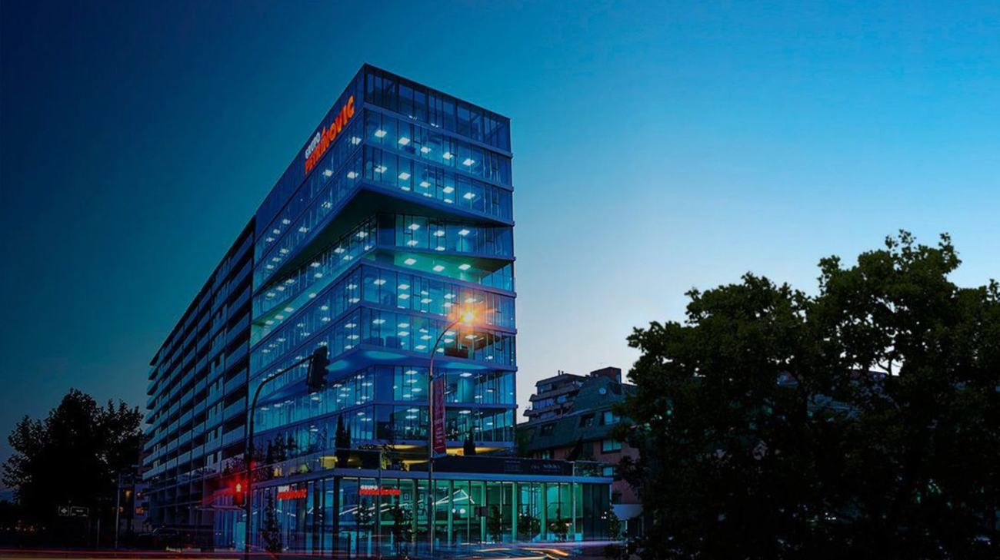
Donde trabaja su gente
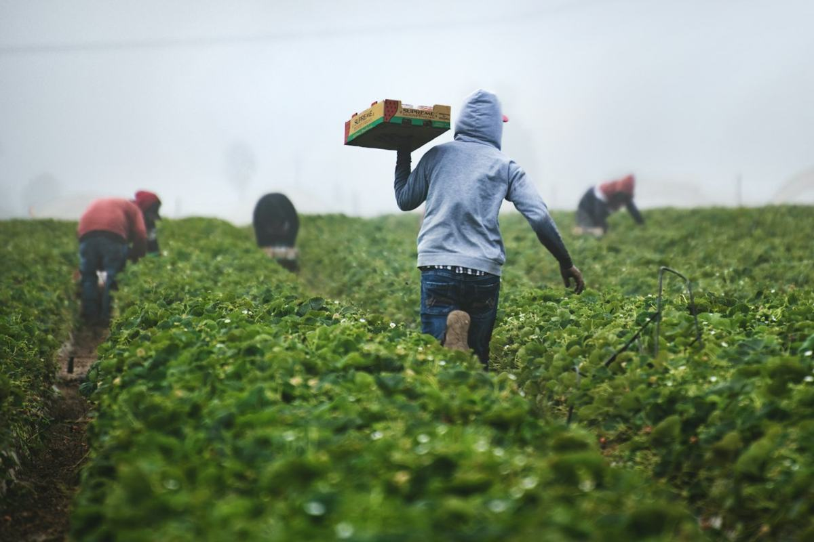
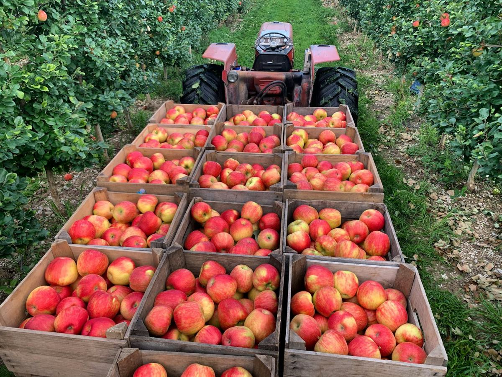
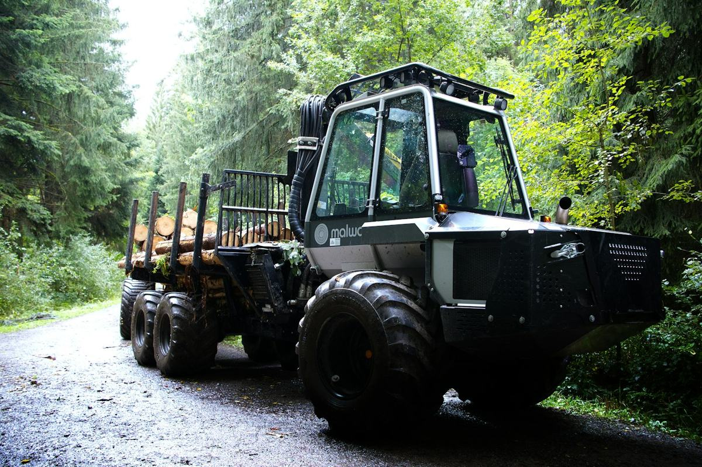
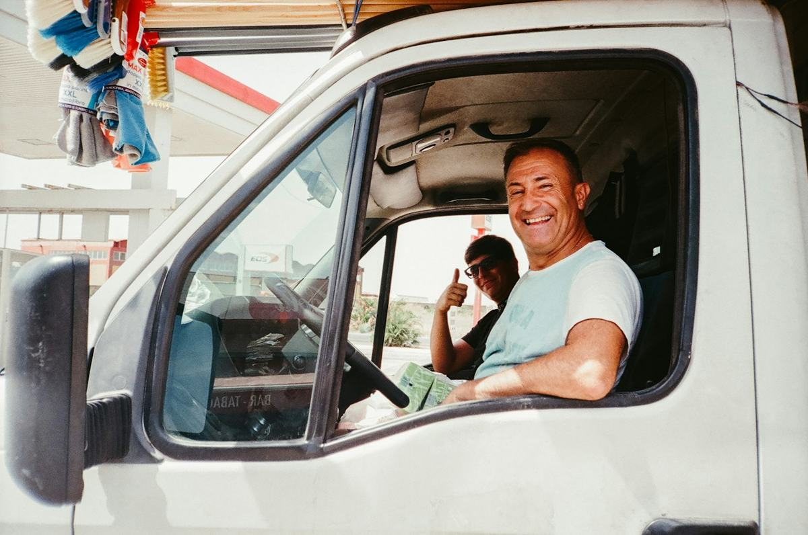
Por qué importa
accidentes laborales se registraron en Chile durante 2025. Siete de cada diez ocurrieron en el trabajo.
SUSESO, balance 2025personas murieron en accidentes del trabajo en Chile durante 2025.
SUSESO, balance 2025de los accidentes graves de 2025 fueron caídas desde más de 1,8 metros.
SUSESO, informe anual de seguridad y salud en el trabajo 2025Saber quién está en condiciones de subir, conducir u operar es la primera barrera de control. Y es la única que actúa antes de que la persona entre a la faena.
Nuestros servicios
Cada servicio resuelve un problema concreto de su operación. Puede contratar uno o coordinarlos todos con un mismo equipo.
Visión, reflejos, atención y fatiga de quienes conducen u operan.
Conoce más →En nuestro centro médico de Santiago, con resultados en línea en 12 horas.
Conoce más →Privada o ChileValora, más auditorías laborales, gestión documental y carpetas de arranque.
Conoce más →Candidatos para cargos operativos, evaluados antes de contratar.
Conoce más →Operadores y conductores habilitados según el estándar del mandante.
Conoce más →Evaluamos en su empresa o en su faena, en todo el país.
Conoce más →Masivo o individual
Todos nuestros servicios funcionan en los dos formatos, con el mismo rigor de evaluación.
Para aperturas de obra, temporadas agrícolas, nuevos contratos y paradas de planta.
Para un ingreso puntual, un reemplazo urgente o un cargo crítico.
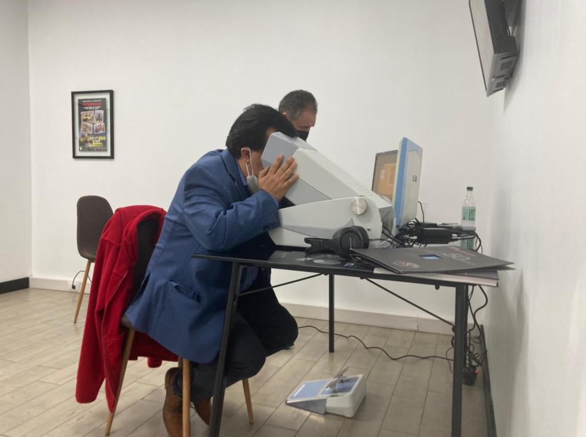
Salud laboral
La evaluación psicosensométrica y psicolaboral mide visión, audición, reflejos, coordinación y atención de quienes conducen u operan equipos. También detecta fatiga, somnolencia y aversión al riesgo.
El cambio que genera
Dotaciones completas antes de una temporada o un contrato nuevo, en el centro o en su faena.
Un conductor u operador que ingresa o renueva, con resultado en 12 horas.
Una empresa de transporte evalúa a toda su dotación antes de la temporada alta. Detecta a los conductores con visión nocturna disminuida, los deriva a tratamiento y reordena los turnos. La flota sigue operando y el riesgo baja antes del primer viaje.
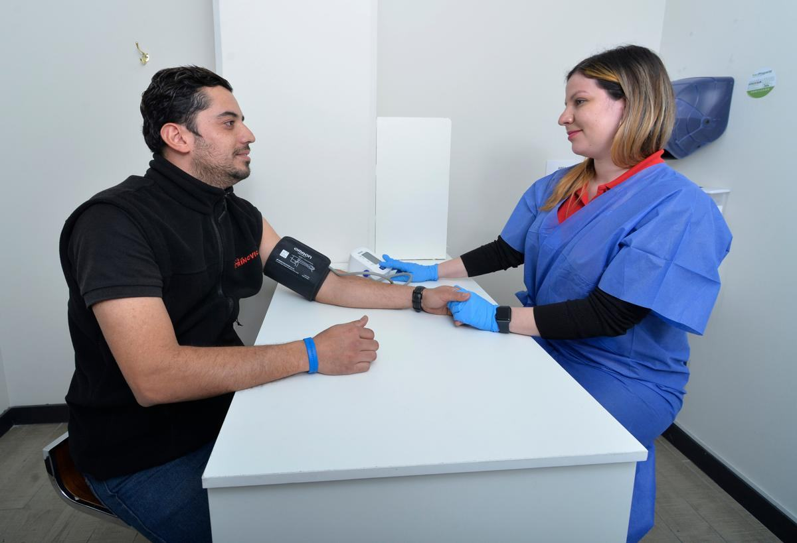
Centro médico en Santiago
En nuestro Centro de Salud Laboral de Av. Los Leones 1707, Providencia, determinamos si la persona es apta para el cargo: altura física, espacios confinados, altitud geográfica, alcohol y drogas, entre otras baterías. Una capacidad de respuesta probada con empresas mandantes como Codelco y Anglo American.
El cambio que genera
Baterías completas para aperturas de obra o contratos nuevos, con capacidad para 300 atenciones diarias.
El examen de quien ingresa o cambia de cargo, con hora en nuestro centro.
Una constructora exige la batería de altura física a todo ingreso de obra. Quien no está en condiciones de trabajar sobre 1,8 metros se detecta en la consulta y se reubica en otra función. Nadie lo descubre arriba del andamio.
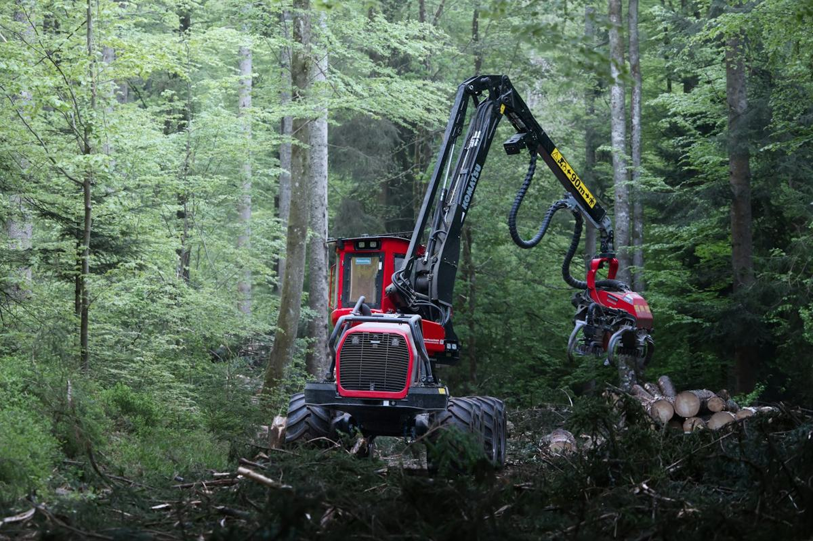
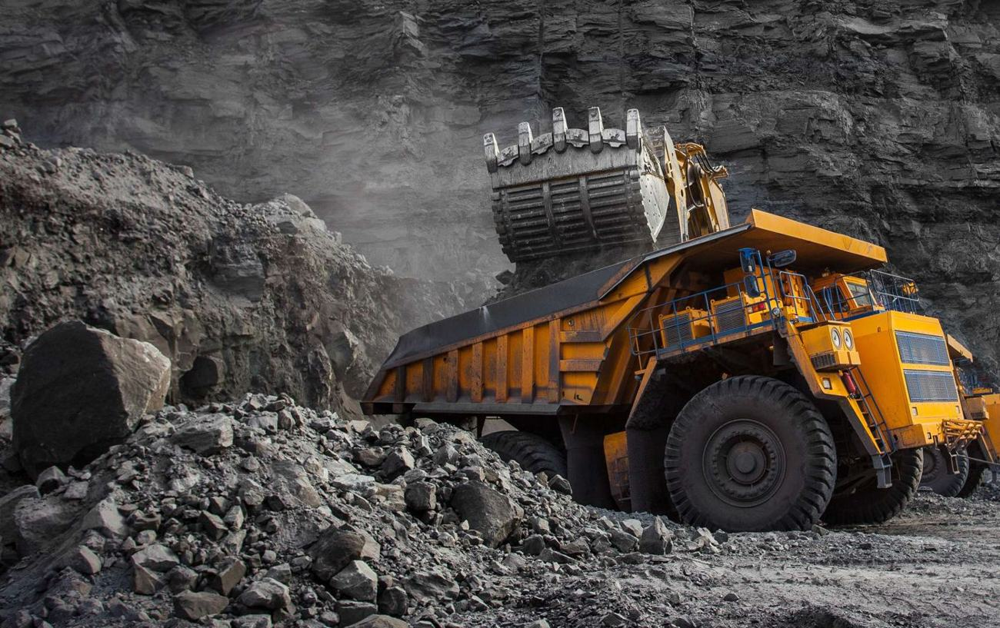
Certificación de competencias
Evaluamos de forma teórica y práctica a cada trabajador según su perfil ocupacional. Certificación privada, a la medida de su faena, o ChileValora, con reconocimiento oficial. Al terminar recibe un ranking con las fortalezas y brechas de cada persona.
El cambio que genera
Levantamiento de competencias de toda una dotación, con ranking de brechas por persona.
Certificación de un operador nuevo, una promoción o un perfil puntual.
Una empresa de transporte de carga levanta las competencias de sus conductores durante dos meses. Un evaluador los acompaña en ruta, registra evidencias y entrega un ranking con las brechas de cada uno. La empresa reasigna recursos y mejora su continuidad operativa frente a los clientes.
Certificar, en números
de aumento salarial para quienes solo se certificaron. Llega a +25% al sumar capacitación.
Evaluación de impacto ChileValora, 2026más empleo formal al año: casi un mes adicional de cotizaciones tras certificarse.
Evaluación de impacto ChileValora, 2026de los empleadores dice que certificar mejora la motivación de sus trabajadores.
Ipsos para ChileValora, 2024de los empleadores dice que le da una ventaja competitiva en el mercado.
Ipsos para ChileValora, 2024de los empleadores cree que ayuda a disminuir la rotación laboral.
Ipsos para ChileValora, 2024de los empleadores cree que contribuye a disminuir los accidentes laborales.
Ipsos para ChileValora, 2024personas se certificaron con ChileValora en 2025, un alza de 45,7% en los procesos.
ChileValora, balance 2025trabajadores ha certificado Escondida | BHP en ocho años.
ChileValora, diciembre de 2025FinanciamientoLas empresas pueden financiar la certificación ChileValora con la franquicia tributaria SENCE, hasta el 1% de su planilla anual de remuneraciones, directamente o a través de su OTIC. Como centro acreditado, Petrinovic gestiona el proceso completo.
Cumplimiento laboral
Revisamos que contratistas y subcontratistas cumplan sus obligaciones laborales y previsionales, como exige la Ley 20.123.
Mantenemos al día la documentación de su empresa y de sus trabajadores en los portales de acreditación de cada mandante.
Le ayudamos a reunir y ordenar la carpeta de arranque que exige el mandante antes de iniciar un proyecto.
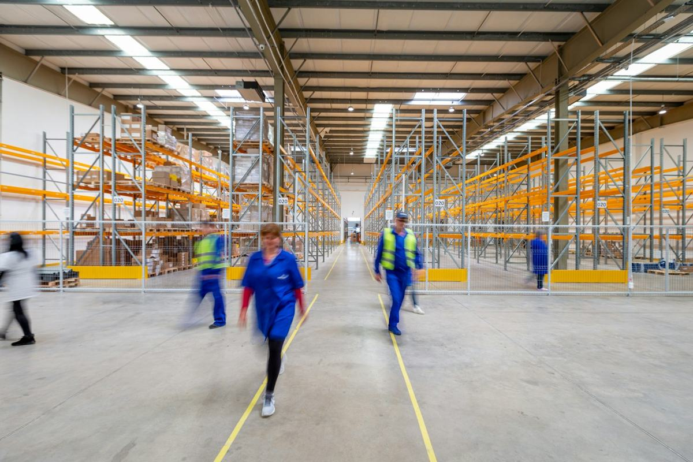
Reclutamiento y selección
Nos hacemos cargo del proceso completo, desde el levantamiento del perfil hasta el examen preocupacional con la batería que exige el cargo. Su empresa participa en la entrevista técnica y toma la decisión final. Y lo respaldamos con una garantía de reposición sin costo de 45 a 60 días.
El cambio que genera
Contratación para aperturas de obra, temporadas, nuevos contratos o paradas de planta, con un mismo estándar para decenas de candidatos.
Búsqueda de un cargo crítico o reemplazo urgente, con terna evaluada.
Una empresa de logística necesita 30 operadores de grúa horquilla para la temporada alta. Entrevista a una terna por cargo y los seleccionados llegan con la evaluación psicológica y el examen preocupacional ya aprobados. Entran a turno sin esperar exámenes.
El proceso
Lo que cuesta contratar mal
fue la tasa de rotación laboral del empleo formal en Chile.
INE, medición de junio de 2025es la permanencia laboral en construcción, frente a 82,9% en minería.
INE, junio de 2025sueldos anuales cuesta reemplazar a un trabajador.
Gallup, 2019personas dejan un trabajo nuevo en los primeros 90 días.
Jobvite, 2018EjemploSi contrata 20 operadores y 3 de cada 10 se van antes de los 90 días, debe reemplazar a 6. Al costo mínimo que estima Gallup, medio sueldo anual por persona, eso equivale a 3 sueldos anuales completos perdidos, sin contar los días con el cargo vacío. Y cubrir un cargo no ejecutivo toma en promedio 39 días (SHRM). Hoy, dos de cada tres empresas contratan sin usar datos objetivos (Perzon IA, 2025).
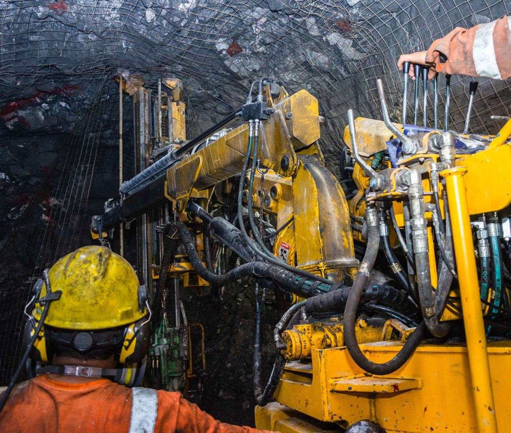
Servicio Acreditación Laboral
Acreditamos a quienes operan maquinaria, equipos y vehículos, con evaluación teórica y práctica según el estándar de cada mandante. Además, custodiamos la documentación de sus trabajadores y armamos y presentamos sus carpetas en los gestores de control de cada faena.
El cambio que genera
Cuadrillas completas antes de una parada de planta o del inicio de un contrato.
El operador o conductor que se suma a mitad de proyecto.
Una empresa de montaje industrial debe ingresar una cuadrilla a una parada de planta. Acredita a sus rigger y operadores por turno y llega al primer día con la documentación completa. La parada parte a la hora programada.
Gestión documental de acreditación
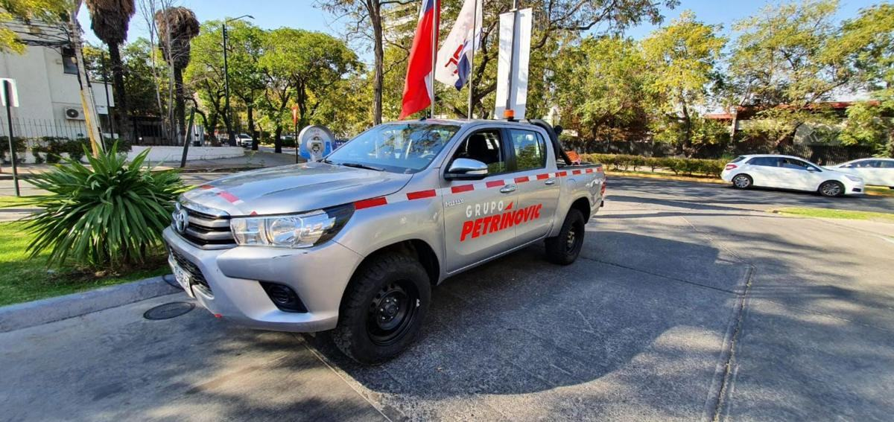
Operativos en terreno
Realizamos evaluaciones psicosensométricas y certificaciones en las instalaciones de su empresa o directamente en faena, en cualquier punto del país.
El cambio que genera
Jornadas en su faena para grupos completos, a partir de un mínimo de trabajadores por jornada.
Si son pocas personas, las atendemos en nuestro centro de Providencia con hora agendada.
Una empresa forestal evalúa a sus operadores de maquinaria en el mismo predio, entre turnos. Nadie viaja a la ciudad, nadie pierde la jornada y los informes quedan disponibles en línea para prevención de riesgos.
Industrias
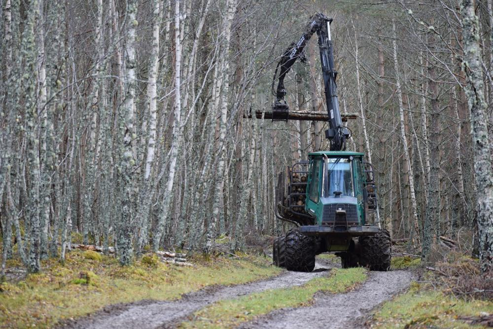
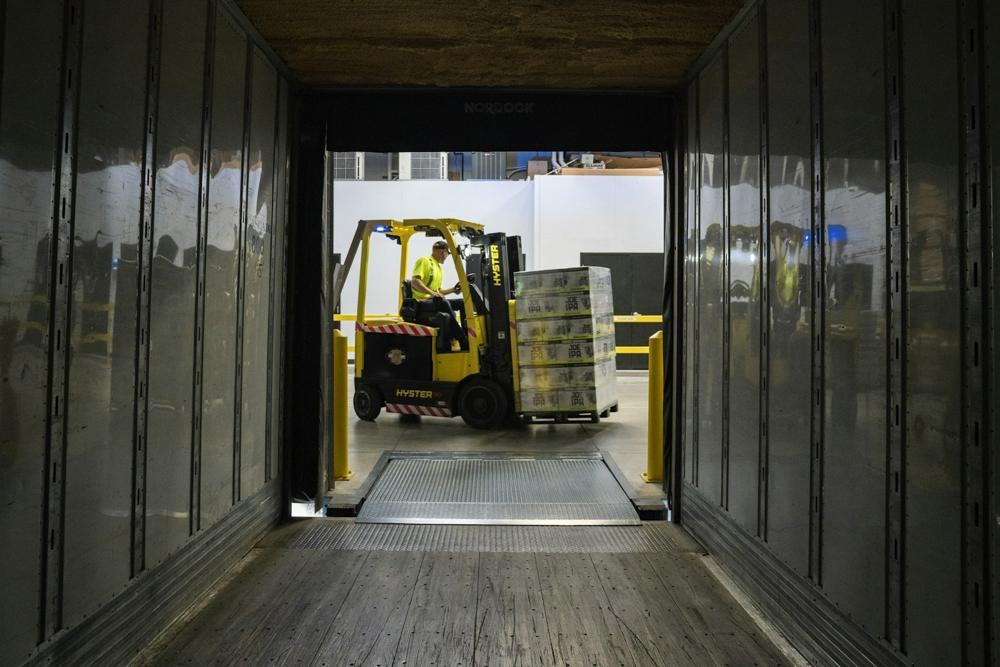
Cómo trabajamos
Demos el primer paso
Le respondemos con un plan a la medida de su operación: qué evaluar, dónde y en qué plazo.